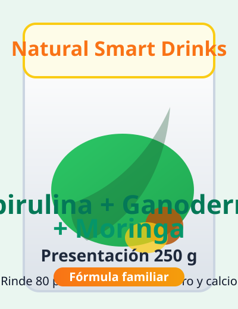
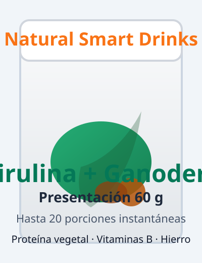
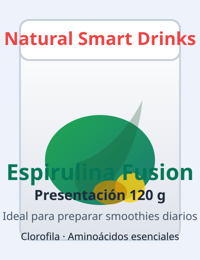
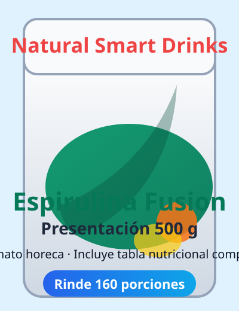

Proteína completa
Una porción de 5 g aporta proteína vegetal de alta biodisponibilidad y aminoácidos esenciales para tu recuperación muscular.

Nuestro bestseller mezcla espirulina premium con ganoderma, moringa y superalimentos naturales. Siguiendo las recetas del blog y de Instagram, puedes preparar batidos, shots o infusiones nutritivas en segundos.


Mostramos el polvo verde intenso en cada publicación y detallamos en el blog su origen libre de contaminantes y rico en ficocianina.

Compartimos tutoriales de smoothies, shots alcalinos y recetas detox con agua de coco para que aproveches cada cucharadita.

Los testimonios destacan cómo el polvo rinde múltiples porciones, la claridad mental y el apoyo al sistema inmune.

En el blog contamos cómo combinamos espirulina deshidratada con ganoderma, moringa y un toque de cacao para equilibrar sabor y bienestar. Cada lote se mezcla en frío para preservar proteínas y pigmentos, luego lo sellamos en empaques con protección UV.
Una porción de 5 g aporta proteína vegetal de alta biodisponibilidad y aminoácidos esenciales para tu recuperación muscular.
La ficocianina de la espirulina, junto con la moringa rica en vitamina C, combate radicales libres como reseñamos en nuestras notas educativas.
Los seguidores comentan mayor enfoque gracias al aporte de vitaminas del complejo B y hierro biodisponible.
El blog recomienda mezclarlo con agua tibia y limón para apoyar el sistema digestivo sin azúcares añadidos.

La cultivamos en estanques controlados, secada a baja temperatura para preservar ficocianina, clorofila y proteína completa.

Superalimento rico en vitamina C y calcio, aporta el equilibrio vegetal que describimos en nuestras recetas.

Adaptógeno que apoya el sistema inmune y reduce el estrés oxidativo, protagonista en nuestras publicaciones educativas.

Suaviza el perfil herbal y aporta magnesio, ideal para recetas calientes que compartimos en el blog.
Escoge el tamaño que se adapta a tu consumo. Cada empaque incluye información nutricional detallada y recomendaciones de preparación.

Ideal para iniciar el hábito: rinde hasta 20 porciones y cabe en cualquier maleta. Incluye dosis sugerida en cucharaditas.

Nuestra versión favorita para familias pequeñas. Perfecta para smoothies matutinos y recetas detox del blog.
Presentación completa con mezcla de espirulina, ganoderma y moringa. Inspirada en las fotos destacadas de Instagram.

Formato profesional para cafeterías, bares saludables y planes corporativos. Incluimos asesoría de dosificación.
Nos inspiramos en las publicaciones más guardadas y en artículos del blog para mostrarte cómo disfrutar Espirulina Fusion.

Agrega una cucharadita a agua tibia con limón, como mostramos en el blog, para activar tu metabolismo cada mañana.

Prepara batidos con piña, manzana y Espirulina Fusion para un boost antioxidante y alcalino.

Despachamos cada pedido con sellos de seguridad y guía de preparación impresa, tal como mostramos en stories.
Mezcla una cucharadita (5 g) con agua, jugo o tu leche vegetal favorita. En el blog encuentras recetas calientes con cacao y bebidas frías con piña y limón.

“Sigo la receta del blog con agua tibia, limón y una cucharadita: siento energía sostenida y digestión ligera.”
Valentina – comunidad Natural Smart Drinks
“Me encanta que la tabla nutricional venga en el empaque. Ahora preparo smoothies con moringa y se siente la diferencia.”
Juan – cliente en Bogotá
“La suscripción por WhatsApp me asegura reposición mensual. Usamos la presentación de 500 g en nuestro bar saludable.”
Laura – ferias saludables
Escríbenos al WhatsApp +57 302 331 3920 y coordinamos tu entrega en Bogotá. Recibirás recomendaciones de mezcla y acceso al recetario del blog.
Guárdala en un lugar fresco y seco. Después de abrir, cierra bien el empaque resellable y consume en máximo 60 días para mantener su potencia.
Enviamos a Bogotá y municipios cercanos. Escríbenos por WhatsApp para coordinar mensajería y tiempos de entrega.
Ofrecemos reposiciones mensuales y bimensuales. Puedes pausar o cancelar con 48 horas de anticipación sin costo adicional.
Sí. Espirulina Fusion es 100% vegetal y libre de lácteos, gluten, soya y azúcar refinada.